I’m a Computer Engineering graduate from USTP with hands-on experience in web development and system design. I enjoy building user-centered solutions and continuously improving my skills through real-world projects.
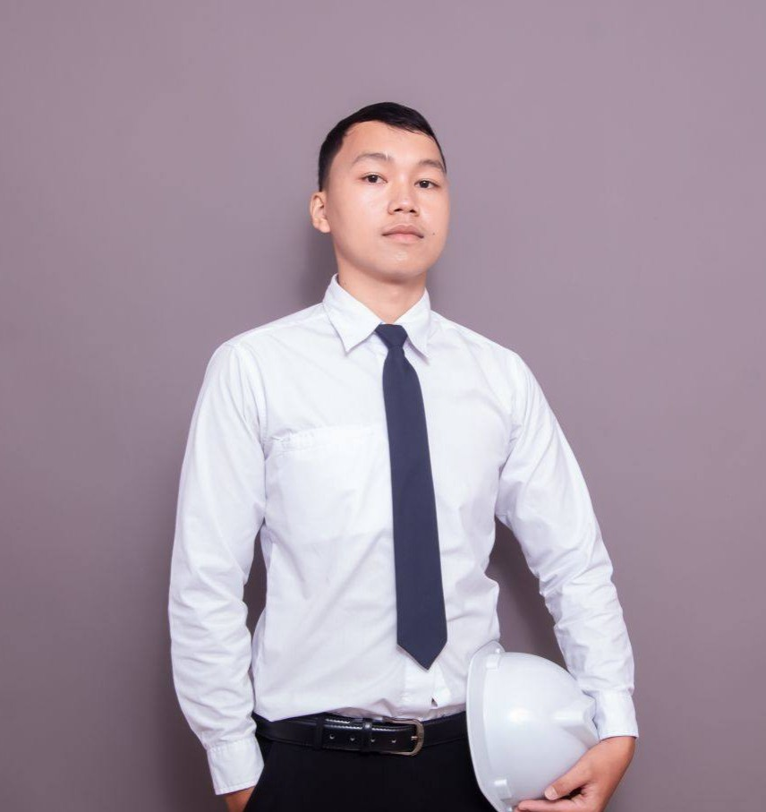
I am a Computer Engineer with a strong passion for understanding how technology works and applying it to solve real-world problems. I have experience in programming, web development, and system design, with a growing focus on building user-centered and interactive digital solutions.
I am particularly interested in developing systems that enhance learning and user experience, combining both technical functionality and visual design. Through continuous practice and hands-on projects, I strive to improve my skills and create solutions that are efficient, engaging, and data-driven.
I am a dedicated and adaptable individual who is always eager to learn, explore new technologies, and take on new challenges.
Developing mobile applications using Flutter, creating full-stack websites, and exploring AI/ML for real-world solutions.
6+ years of experience in hardware troubleshooting and repair, with additional hands-on experience in embedded systems and foundational networking knowledge developed through academic projects and internship.
DILG X (Department of the Interior and Local Government)
My internship experience includes performing network troubleshooting and basic configuration, and LAN/printer repairs. During this internship, I significantly enhanced my Full-Stack Web Development skills and developed a fully interactive mobile app using Flutter.
Independent / Client-based
Combining hardware and software to develop projects involving IoT embedded systems and full-stack web development, demonstrating my ability to build integrated and practical solutions.
6+ Years Experience
I have a strong background as a technical specialist with hands-on experience in diagnosing and troubleshooting a wide range of mobile devices. I am highly confident in my ability to identify issues efficiently and provide effective solutions, demonstrating strong analytical and problem-solving skills.
USTP
Graduated with a deep understanding of computer architecture, programming logic, and systems integration.
Click on any project to read the description and view more pictures or videos.
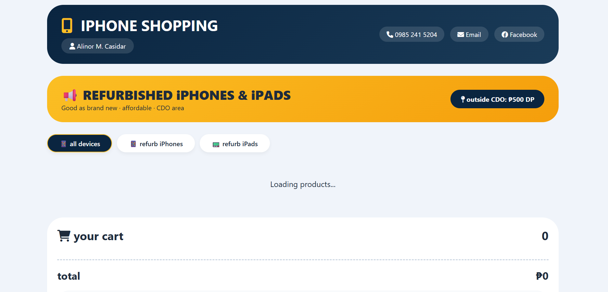
A responsive web-based e-commerce platform designed for selling refurbished iPhones...
Web Dev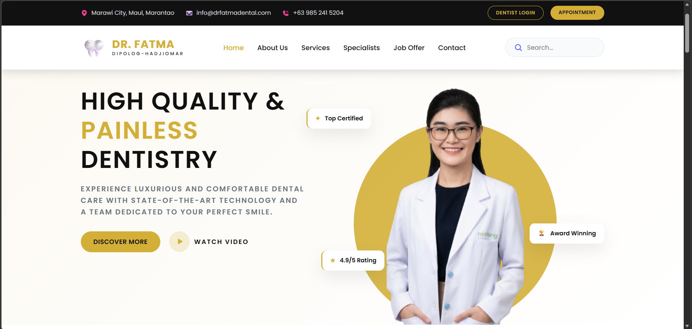
Upcoming project: A full-stack web application designed for managing...
Web App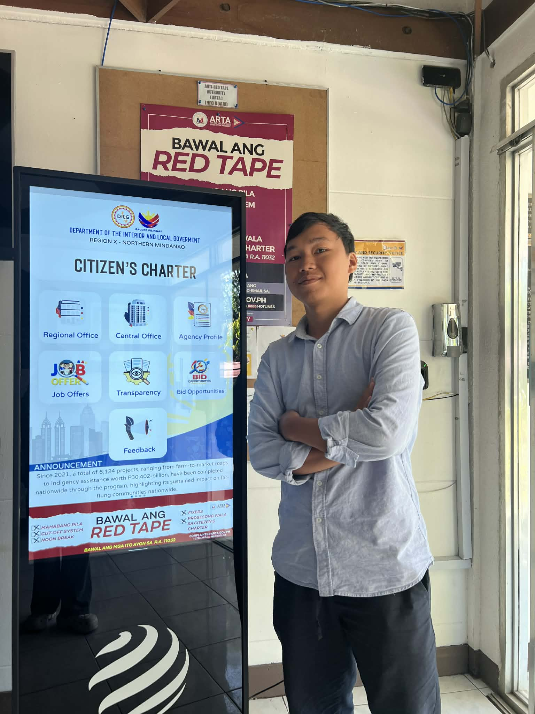
An interactive mobile application developed using Flutter during my OJT...
Flutter MobilePrivate Project
A comprehensive digital solution for managing financing operations (confidential).
Full Stack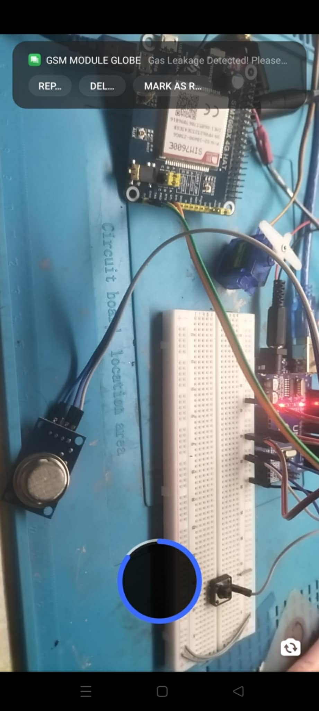
An IoT-based safety system designed to detect LPG gas leaks...
Embedded IoT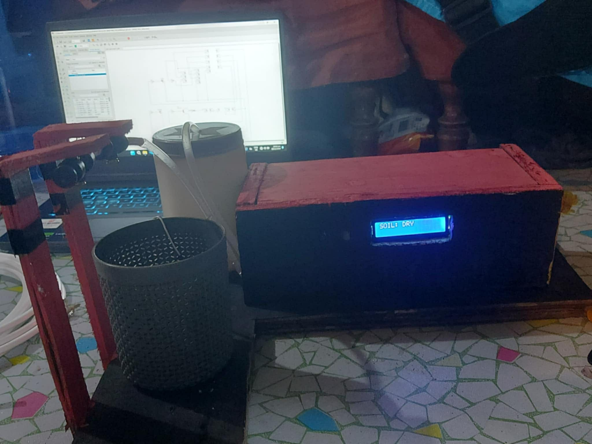
An automated irrigation system designed to help farmers optimize water...
IoT Hardware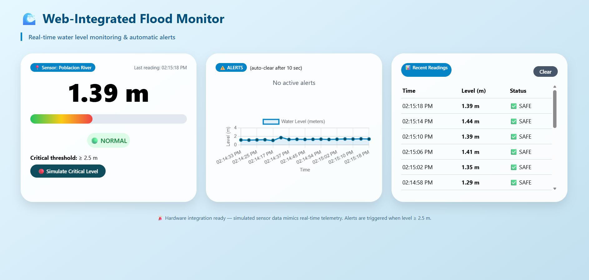
A water level detector connected to a website that can automatically...
IoT + Web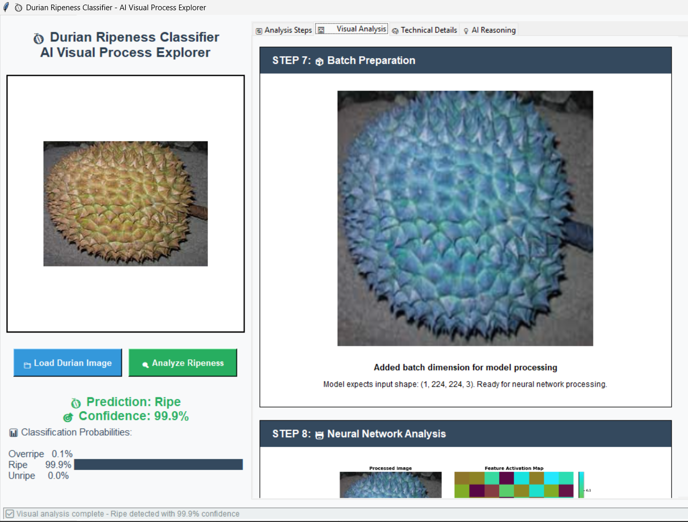
An AI-powered computer vision system designed to accurately classify durian...
AI / ML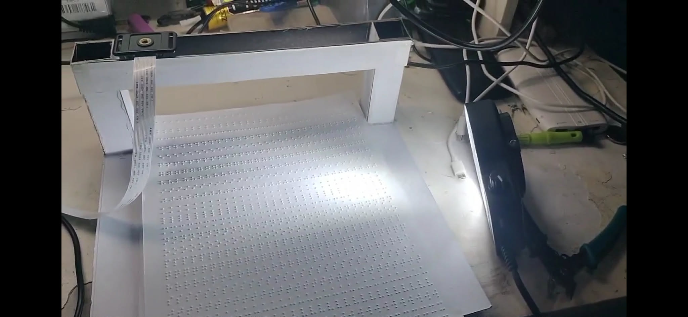
A detector built to help completely blind individuals by recognizing...
AI Vision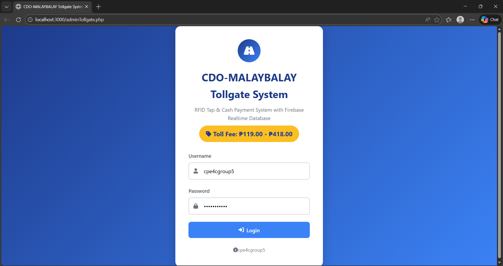
Raspberry Pi based dual‑lane automated toll collection with RFID, servo barrier, LCD feedback & Firebase cloud sync.
IoT + Web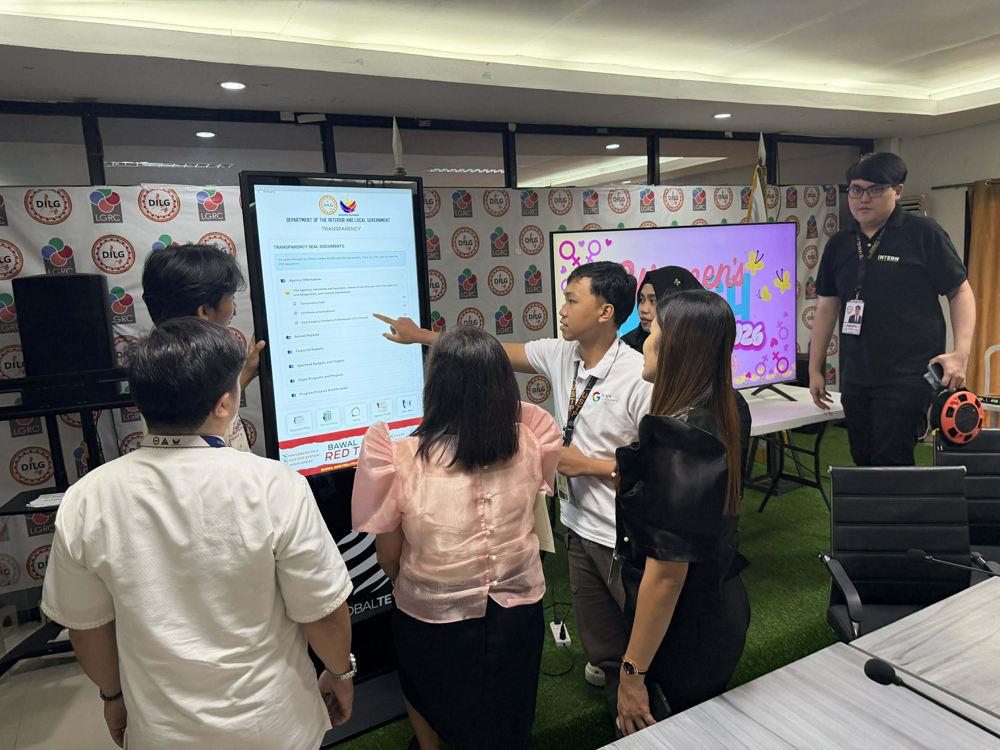
Full‑stack development, network troubleshooting, Flutter app, and system support.
Internship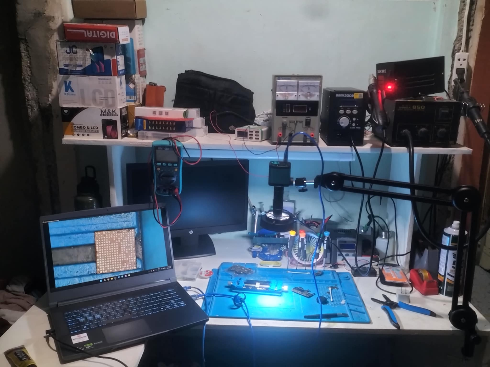
Gallery of my 3+ years experience as a technician. Includes complex...
Hardware TechOpen to opportunities where I can apply my skills in web development, system design, and building practical technology solutions.